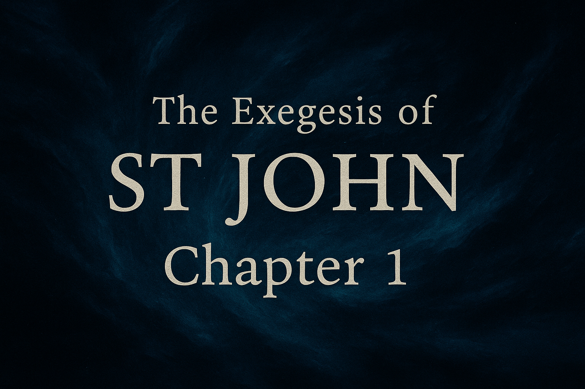
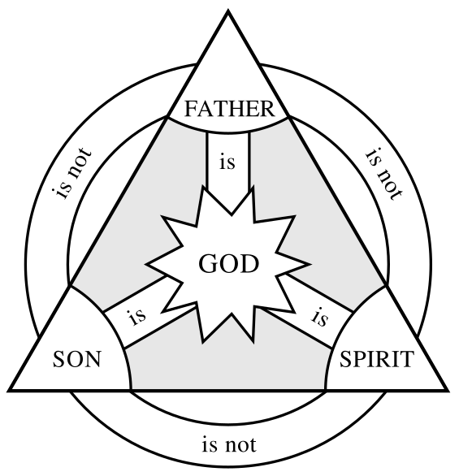

The Exegesis of St John Chapter 1
1. Structure at a Glance
- 1:1–18 Prologue (Hymn/Overture): Pre-existence → creation → revelation → rejection/receiving → incarnation → exegeting the Father.
- 1:19–28 John’s First Testimony: Identity by denial (not the Christ/Elijah/Prophet) and by Scripture (Isa 40:3).
- 1:29–34 John’s Second Testimony: “Lamb of God,” Spirit descent, “Son of God.”
- 1:35–42 First Disciples: “Come and see,” Andrew and Simon (renamed Cephas).
- 1:43–51 Philip & Nathanael: “We have found…,” “King of Israel,” “angels ascending/descending” on the Son of Man
Scripture:
The voice of one calling out, “Clear the way for the Lord in the wilderness; Make straight in the desert a highway for our God.-Isaiah 40:3
2. Prologue (1:1–18): Text-by-Text
John 1:1
- Ἐν ἀρχῇ "en archē" (“In the beginning”): deliberate echo of Gen 1:1; signals a new creation frame.
- ὁ λόγος "logos" (the Word): In the OT, God’s word creates and reveals (Ps 33:6; Isa 55:10–11); linked with Wisdom (Prov 8; Sir 24). John leverages this biblical matrix more than importing later Hellenistic philosophy.
- καὶ ὁ λόγος ἦν πρὸς τὸν θεόν "pro ton Theon" (“with God”): πρός (pros) implies distinction and communion.
- καὶ θεὸς ἦν ὁ λόγος: anarthrous θεός before the subject stresses qualitative deity (not “a god”). Grammar fits a qualitative predicate nominative (often called Colwell’s observation).
Scripture:
“In the beginning God created the heavens and the earth.”-Genesis 1:1
“By the word of the LORD the heavens were made, And by the breath of His mouth all their lights.”-Psalm 33:6
“For as the rain and the snow come down from heaven, And do not return there without watering the earth And making it produce and sprout, And providing seed to the sower and bread to the eater; So will My word be which goes out of My mouth; It will not return to Me empty, Without accomplishing what I desire, And without succeeding in the purpose for which I sent it.”-Isaiah 55:10-11
The Commendation of Wisdom Proverbs 8
1 Does not wisdom call, And understanding raise her voice? 2 On top of the heights beside the way, Where the paths meet, she takes her stand; 3 Beside the gates, at the opening to the city, At the entrance of the doors, she cries out: 4 “To you, people, I call, And my voice is to mankind. 5 You naive ones, understand prudence; And, you fools, understand wisdom! 6 Listen, for I will speak noble things; And the opening of my lips will reveal right things. 7 For my mouth will proclaim truth; And wickedness is an abomination to my lips. 8 All the words of my mouth are in righteousness; There is nothing crooked or perverted in them. 9 They are all straightforward to him who understands, And right to those who find knowledge. 10 Accept my instruction and not silver, And knowledge rather than choice gold. 11 For wisdom is better than jewels; And all desirable things cannot compare with her. 12 “I, wisdom, dwell with prudence, And I find knowledge and discretion. 13 The fear of the LORD is to hate evil; Pride, arrogance, the evil way, And the perverted mouth, I hate. 14 Advice is mine and sound wisdom; I am understanding, power is mine. 15 By me kings reign, And rulers decree justice. 16 By me princes rule, and nobles, All who judge rightly. 17 I love those who love me; And those who diligently seek me will find me. 18 Riches and honor are with me, Enduring wealth and righteousness. 19 My fruit is better than gold, even pure gold; And my yield better than choice silver. 20 I walk in the way of righteousness, In the midst of the paths of justice, 21 To endow those who love me with wealth, That I may fill their treasuries. 22 “The LORD created me at the beginning of His way, Before His works of old. 23 From eternity I was established, From the beginning, from the earliest times of the earth. 24 When there were no ocean depths, I was born, When there were no springs abounding with water. 25 Before the mountains were settled, Before the hills, I was born; 26 While He had not yet made the earth and the fields, Nor the first dust of the world. 27 When He established the heavens, I was there; When He inscribed a circle on the face of the deep, 28 When He made firm the skies above, When the springs of the deep became fixed, 29 When He set a boundary for the sea So that the water would not violate His command, When He marked out the foundations of the earth; 30 Then I was beside Him, as a master workman; And I was His delight daily, Rejoicing always before Him, 31 Rejoicing in the world, His earth, And having my delight in the sons of mankind. 32 “Now then, sons, listen to me, For blessed are those who keep my ways. 33 Listen to instruction and be wise, And do not neglect it. 34 Blessed is the person who listens to me, Watching daily at my gates, Waiting at my doorposts. 35 For one who finds me finds life, And obtains favor from the LORD. 36 But one who [m]sins against me injures himself; All those who hate me love death.”
THE PRAISE OF WISDOM Sirach 24 (Deuterocanonical)
1 Wisdom praises herself, and tells of her glory in the midst of her people. 2 In the assembly of the Most High she opens her mouth, and in the presence of his hosts she tells of her glory: 3 ‘I came forth from the mouth of the Most High, and covered the earth like a mist. 4 I dwelt in the highest heavens, and my throne was in a pillar of cloud. 5 Alone I compassed the vault of heaven and traversed the depths of the abyss. 6 Over waves of the sea, over all the earth, and over every people and nation I have held sway. 7 Among all these I sought a resting-place; in whose territory should I abide? 8 ‘Then the Creator of all things gave me a command, and my Creator chose the place for my tent. He said, “Make your dwelling in Jacob, and in Israel receive your inheritance.” 9 Before the ages, in the beginning, he created me, and for all the ages I shall not cease to be. 10 In the holy tent I ministered before him, and so I was established in Zion. 11 Thus in the beloved city he gave me a resting-place, and in Jerusalem was my domain. 12 I took root in an honoured people, in the portion of the Lord, his heritage. 13 ‘I grew tall like a cedar in Lebanon, and like a cypress on the heights of Hermon. 14 I grew tall like a palm tree in En-gedi, and like rose-bushes in Jericho; like a fair olive tree in the field, and like a plane tree beside water I grew tall. 15 Like cassia and camel’s thorn I gave forth perfume, and like choice myrrh I spread my fragrance, like galbanum, onycha, and stacte, and like the odour of incense in the tent. 16 Like a terebinth I spread out my branches, and my branches are glorious and graceful. 17 Like the vine I bud forth delights, and my blossoms become glorious and abundant fruit. 19 ‘Come to me, you who desire me, and eat your fill of my fruits. 20 For the memory of me is sweeter than honey, and the possession of me sweeter than the honeycomb. 21 Those who eat of me will hunger for more, and those who drink of me will thirst for more. 22 Whoever obeys me will not be put to shame, and those who work with me will not sin.’Wisdom and the Law
23 All this is the book of the covenant of the Most High God, the law that Moses commanded us as an inheritance for the congregations of Jacob. 25 It overflows, like the Pishon, with wisdom, and like the Tigris at the time of the first fruits. 26 It runs over, like the Euphrates, with understanding, and like the Jordan at harvest time. 27 It pours forth instruction like the Nile, like the Gihon at the time of vintage. 28 The first man did not know wisdom[h] fully, nor will the last one fathom her. 29 For her thoughts are more abundant than the sea, and her counsel deeper than the great abyss. 30 As for me, I was like a canal from a river, like a water channel into a garden. 31 I said, ‘I will water my garden and drench my flower-beds.’ And lo, my canal became a river, and my river a sea. 32 I will again make instruction shine forth like the dawn, and I will make it clear from far away. 33 I will again pour out teaching like prophecy, and leave it to all future generations. 34 Observe that I have not laboured for myself alone, but for all who seek wisdom.
Summary Proverbs 8 and Sirach 24 Connection:
- Pre-existence:
- Proverbs 8:22–31 – Wisdom speaks as one “begotten” before creation, present with God as a “master craftsman.”
- Sirach 24:3–9 – Wisdom comes forth from the mouth of the Most High and dwells in creation.
- John 1:1 – “In the beginning was the Word” — directly echoes this eternal pre-existence.
- Role in Creation:
- Proverbs 8:30 – Wisdom rejoices beside God as creation unfolds.
- Sirach 24:8 – Wisdom is commanded to take root in creation.
- John 1:3 – “All things were made through Him” — identifying Christ as the divine agent of creation.
- Indwelling / Tabernacling:
- Sirach 24:8–12 – Wisdom “pitched her tent” (tabernacled) among the people.
- John 1:14 – “The Word became flesh and dwelt (tabernacled) among us,” fulfilling Wisdom’s promise to dwell with humanity.
- Divine Identity:
- Both OT passages personify Wisdom as sharing God’s nature.
- John takes this personification and names it explicitly: the Logos is not just an attribute but a Person — Jesus Christ.
θεόν (theon) — Accusative Singular (object form)
- Used when “God” is the object of the verb. Some examples:
- John 1:1–2 -“καὶ ὁ λόγος ἦν πρὸς τὸν θεόν” (“and the Word was with God”)
- John 1:18 – “θεὸν οὐδεὶς ἑώρακεν πώποτε” (“No one has ever seen God”)
- Romans 1:21 – “γνόντες τὸν θεόν” (“knowing God”)
- Romans 8:3 – “ὁ θεὸς τὸν ἑαυτοῦ υἱὸν ἔπεμψεν” (“God sent His own Son”) — “God” is object here in accusative.
- Hebrews 11:6 – “δεῖ γὰρ τὸν προσερχόμενον τῷ θεῷ πιστεύειν” (Dative actually — “must believe that God exists”)
So θεόν often shows up in direct-object constructions — “knowing God,” “seeing God,” “believing God,” “being with God.”
θεός (theos) — Nominative Singular (subject form)
- Used when “God” is the subject or predicate of the sentence. Some examples:
- John 1:1 – “καὶ θεὸς ἦν ὁ λόγος” (“and the Word was God”)
- Romans 8:31 – “εἰ ὁ θεὸς ὑπὲρ ἡμῶν” (“If God is for us”)
- 1 Corinthians 8:6 – “ἀλλ’ ἡμῖν εἷς θεὸς ὁ πατὴρ” (“yet for us there is one God, the Father”)
- Hebrews 1:8 – “πρὸς δὲ τὸν υἱόν… ὁ θεός” (“But of the Son he says, ‘Your throne, O God…’”)
- Revelation 21:3 – “καὶ ἔσται αὐτῶν ὁ θεὸς” (“and God will be with them”)
Here θεός is used as the one doing the action or being identified.
- Key Difference
- θεός (nominative) = identifies who is God or makes God the subject.
- θεόν (accusative) = makes God the object of action (knowing, loving, seeing, worshipping, etc.).
John 1:2–3
Notes:
The Logos (Jesus) is presented as the agent of creation — “without Him not even one thing came into being.” For those of us familiar with Trinitarian doctrine, this statement can be easy to overlook, but it is profoundly significant. This verse affirms that Jesus is not part of creation but its source. If nothing came into existence apart from Him, then He cannot be a created being. Rather, He is both the Creator and uncreated — a direct testimony to His divinity.
This truth is echoed in the Nicene Creed (First Council of Nicaea, 325 A.D.):
“We believe in one Lord Jesus Christ, the only Son of God, eternally begotten of the Father; God from God, Light from Light, true God from true God; begotten, not made, of one essence with the Father.”
Thus, John’s words in John 1:3 are not merely poetic — they are a cornerstone of the doctrine of the Holy Trinity, affirming that the Son shares the same divine nature as the Father.
Scripture:
“The LORD founded the earth by wisdom, He established the heavens by understanding.”- Proverbs 3:19
“for by Him all things were created, both in the heavens and on earth, visible and invisible, whether thrones, or dominions, or rulers, or authorities—all things have been created through Him and for Him.”- Colossians 1:16
“in these last days has spoken to us [b]in His Son, whom He appointed heir of all things, through whom He also made the [c]world.”- Hebrews 1:2
John 1:4–5
- ζωή … τὸ φῶς τῶν ἀνθρώπων: "phôs" ("Life” and “light”) are creation (Gen 1) and revelation motifs.
- κατέλαβεν "katelaben" (“overcome/understand”): Deliberate ambiguity? Most read “the darkness did not overcome it.” Cf. 12:35–36.
Scripture:
So Jesus said to them, “For a little while longer the Light is among you. Walk while you have the Light, so that darkness will not overtake you; also, the one who walks in the darkness does not know where he is going. While you have the Light, believe in the Light, so that you may become sons of Light.”- John 12:35-36
John 1:6–8
- John the Baptist is a witness, not the light; he mediates no salvation, only testimony
The Johannine “legal motif of witness” refers to how the Gospel of John frames Jesus’ mission and identity in courtroom-like language, using the concept of witness/testimony (μαρτυρία, martyria) to establish truth — as if presenting evidence in a trial
Key Features: Johannine legal motif: witness
- Courtroom Setting:
- John portrays Jesus as being on trial before the world. The Gospel repeatedly uses terms like witness, testify, judge, and true/false testimony (cf. John 5:31–40).
- Chain of Witnesses:
- John the Baptist – “came as a witness to testify concerning the light” (John 1:7).
- The Father – bears witness through Jesus’ works (John 5:36–37).
- The Scriptures – testify about Him (John 5:39).
- The Holy Spirit – testifies (John 15:26).
- The Disciples – are called to testify (John 15:27).
- Jesus Himself – gives testimony to the truth (John 18:37).
John calls multiple “witnesses” to testify to Jesus’ identity:
- Legal Weight of Testimony:
John uses Deuteronomy’s principle of “two or three witnesses” (Deut 19:15) to frame this argument: Jesus’ testimony plus the Father’s (or works) meet the standard for establishing truth.
“A single witness shall not rise up against a person regarding any wrongdoing or any sin that he commits; on the testimony of two or three witnesses a matter shall be confirmed.- Deuteronomy 19:15